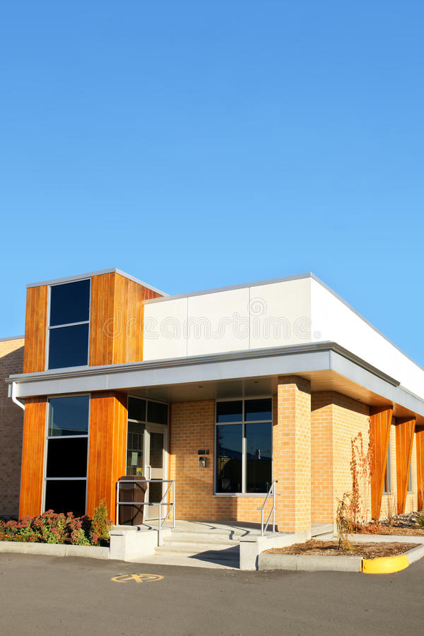
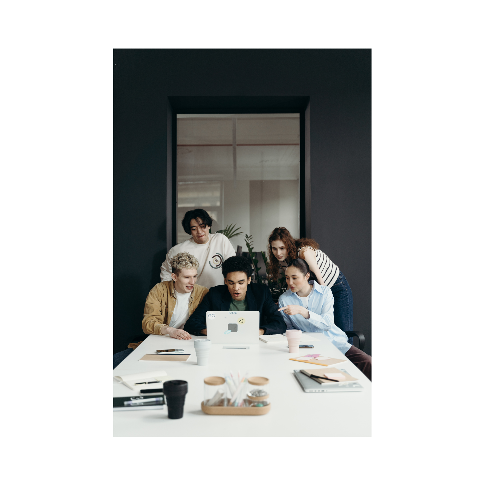

Sejarah WatcHGoodsWatcHGoods dibuat oleh PT WatcHGoods Multimedia pada tahun 2015 dengan tujuan sebagai sarana penyedia jam tangan mewah dengan kualitas, pelayanan, dan keaslian yang terjamin bagi para kolektor jam tangan. Ketika awal didirikan, kantor pusat WatcHGoods berada di daerah Jakarta Timur, Indonesia dan hanya menjual jam tangan secara daring. Seiring berkembangnya WatcHGoods, kini kami memiliki empat toko luring dan tiga kantor pusat yang terletak di tiga negara, yaitu Indonesia, Malaysia, dan Singapura.

VisiMenjadi tujuan utama bagi pecinta jam tangan yang mencari kualitas, gaya, dan keaslian dalam setiap produk, serta memberikan pengalaman pelanggan yang tak tertandingi.Misi1. Menyediakan koleksi jam tangan yang berkualitas tinggi, otentik, dan terpercaya dari merek-merek terkemuka di dunia.2. Memberikan pelayanan pelanggan yang luar biasa, termasuk bantuan ahli dan pengalaman belanja yang nyaman dan mudah.3. Memastikan kepuasan pelanggan melalui komitmen terhadap kualitas, presisi waktu, dan keindahan desain.
 Ralph Edwards
Ralph Edwards
 Lucia Clays
Lucia Clays